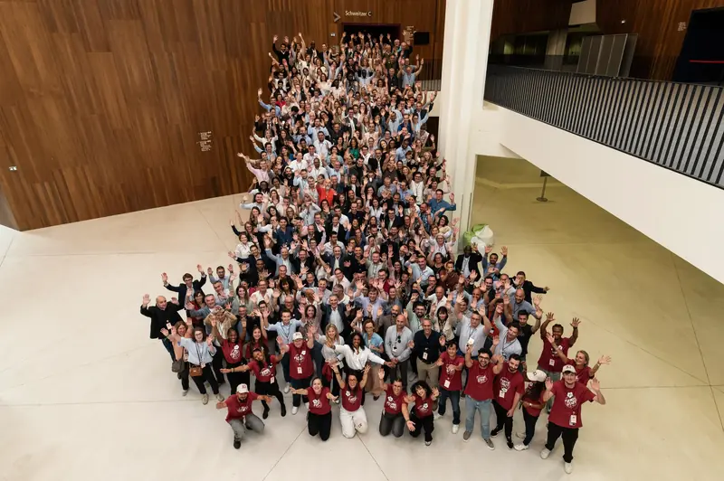
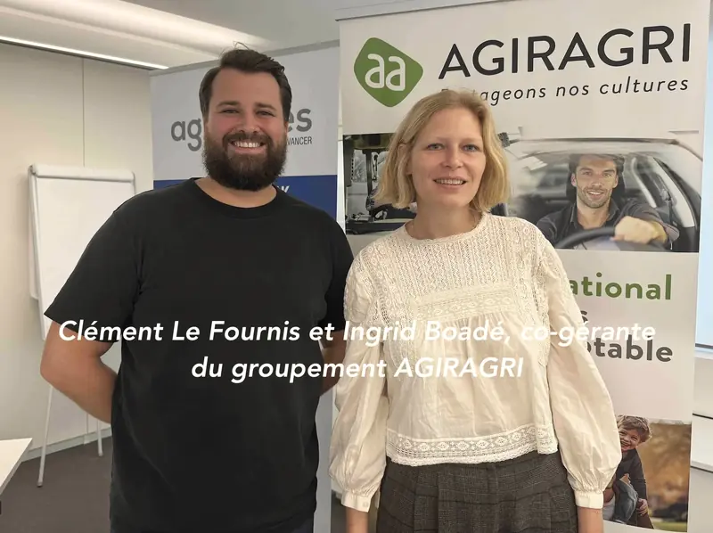
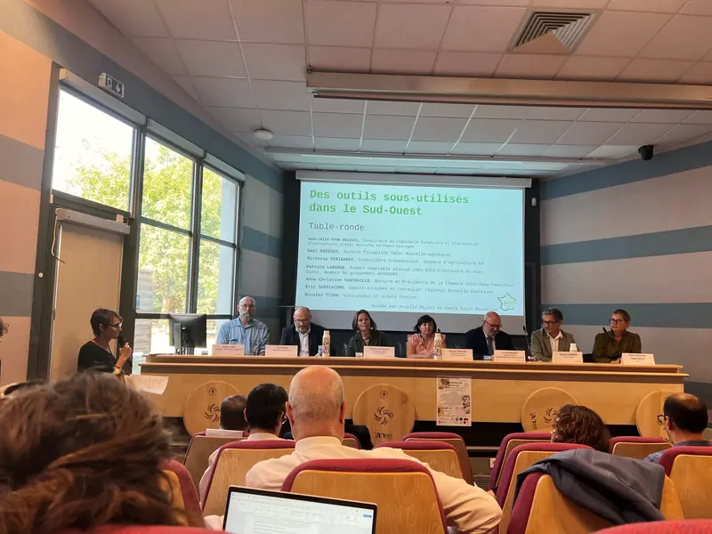
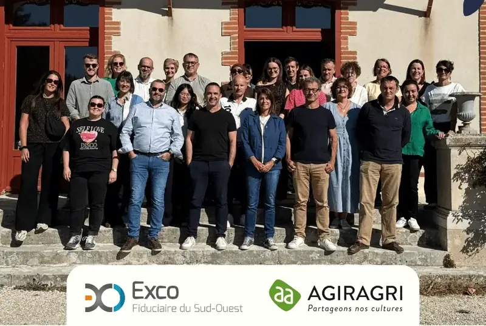

1
CréerStart
Établir un business plan, organiser la comptabilité, sécuriser vos premières décisions juridiques et fiscales.Draw up a business plan, set up your accounts, secure your first legal and tax decisions.
Exco réunit des cabinets d’expertise comptable, d’audit et de conseil indépendants, reliés en un même réseau, en France et dans 14 autres pays. Exco brings together independent accounting, audit and advisory firms, connected in one network, in France and 14 other countries.
139 cabinets dans l’annuaire, reliés à leur groupe et au réseau. Horaires affichés à l’heure locale de chaque cabinet.139 offices in the directory, linked to their group and to the network. Opening hours shown in each office’s local time.
Chaque cabinet est relié au siège de son groupe, et chaque groupe au siège d’Exco à Paris.Each office is linked to its group’s head office, and each group to Exco’s Paris head office.
Nous pensons qu’on ne fait pas un métier technique mais humain. Expert-comptable, auditeur, commissaire aux comptes, juriste, gestionnaire de paie, consultant : autant de métiers pour vous aider à faire croître et embellir votre entreprise. We believe our profession is human before it is technical. Chartered accountants, auditors, statutory auditors, lawyers, payroll specialists and consultants help your business grow and flourish.
Né en 2002Founded in 2002de la fusion de deux réseaux, Exco « historique » et A2A.from the merger of two networks, the original Exco and A2A.
Des cabinets indépendantsIndependent firmsréunis par une ambition locale commune et le partage des savoir-faire.united by a shared local ambition and shared know-how.
Nos valeursOur valuesCollectif, humanisme, confiance.Teamwork, humanism, trust.
139
cabinets d’expertise comptableaccounting offices
15
pays d’implantationcountries
+3400
professionnels dans le mondeprofessionals worldwide
350
experts-comptableschartered accountants
À confirmer : chiffres de l’accueil actuel. Selon les pages, le site indique aussi 136 ou 140 cabinets, 3000 collaborateurs, 16 ou 17 pays.To be confirmed: figures from the current home page. Other pages state 136 or 140 offices, 3,000 employees, 16 or 17 countries.
1
Établir un business plan, organiser la comptabilité, sécuriser vos premières décisions juridiques et fiscales.Draw up a business plan, set up your accounts, secure your first legal and tax decisions.
2
Piloter avec des informations régulières et exploitables, recruter, gérer la paie, vous développer à l’international.Steer with regular, usable information, hire, run payroll, expand abroad.
3
Faire certifier vos comptes, évaluer l’entreprise, préparer un rapprochement ou une acquisition, engager une démarche RSE.Have your accounts audited, value the business, prepare a merger or acquisition, start a CSR approach.
4
Céder ou transmettre avec Exco Finance et Transactions, organiser votre patrimoine avec Exco Gestion Privée.Sell or hand over with Exco Finance et Transactions, organise your assets with Exco Gestion Privée.
Soirée « Transmission d’entreprise » pour les dirigeants, La Rochelle, 19 novembre 2026"Business transfer" evening for business owners, La Rochelle, 19 November 2026Treize services, assurés dans chaque cabinet ou mutualisés par le réseau.Thirteen services, offered in each office or shared across the network.
Les experts de tous les cabinets se retrouvent en commissions sectorielles pour partager leurs pratiques.Experts from every office meet in sector committees to share their practice.
Gestion financière et conformité fiscale des exploitations agricoles, viticoles et agroalimentaires.Financial management and tax compliance for farms, vineyards and food businesses.
Des solutions adaptées aux défis spécifiques de l’industrie automobile.Solutions suited to the specific challenges of the automotive industry.
Gestion, conformité réglementaire et fiscalité adaptées aux établissements financiers.Management, regulatory compliance and tax suited to financial institutions.
Une comptabilité précise et des conseils adaptés aux enjeux du bâtiment et de l’immobilier.Precise accounting and advice suited to construction and property.
Une gestion transparente et un soutien stratégique pour les organisations à vocation sociale.Transparent management and strategic support for social-purpose organisations.
Des solutions comptables agiles pour accompagner le parcours entrepreneurial.Agile accounting solutions along the entrepreneurial journey.
Une gestion comptable et une fiscalité adaptées à votre activité.Accounting and tax suited to your trade.
Gestion financière, efficacité opérationnelle et conformité réglementaire.Financial management, operational efficiency and regulatory compliance.
Une gestion comptable fluide, conforme aux normes du secteur.Smooth accounting that meets the sector’s standards.
Texte à compléter : la page actuelle décrit le médico-socialCopy to be written: the current page describes the care sector
Comptabilité, fiscalité et conseils pour la conformité réglementaire et la croissance de votre officine.Accounting, tax and advice for your pharmacy’s compliance and growth.
Répondre aux attentes des tutelles, des patients, des praticiens et des actionnaires.Meeting the expectations of regulators, patients, practitioners and shareholders.
Une comptabilité transparente et des conseils adaptés aux besoins du secteur public.Transparent accounting and advice suited to the public sector.
Une gestion comptable efficace et des conseils conformes aux exigences du secteur.Efficient accounting and advice that meets the sector’s requirements.
Une gouvernance partagée, un relais international, des engagements concrets et des métiers qui recrutent.Shared governance, international reach, concrete commitments and professions that are hiring.

Les 23 groupes membresThe 23 member groupsDes cabinets indépendants, de Toulouse à Papeete, reliés en un même réseau.Independent firms, from Toulouse to Papeete, connected in one network. Nous connaîtreAbout usNé en 2002, un réseau de fertiliseurs d’entreprises : histoire, valeurs, mission.Founded in 2002, a network of business growers: history, values, mission.
Nous connaîtreAbout usNé en 2002, un réseau de fertiliseurs d’entreprises : histoire, valeurs, mission.Founded in 2002, a network of business growers: history, values, mission. Engagements RSECSR commitmentsEnvironnement, social, économie locale, éthique et transparence.Environment, people, local economy, ethics and transparency.
Engagements RSECSR commitmentsEnvironnement, social, économie locale, éthique et transparence.Environment, people, local economy, ethics and transparency. CarrièresCareersExpert-comptable, auditeur, juriste, paie, conseil : rejoindre Exco.Accountants, auditors, lawyers, payroll, advisory: join Exco.
CarrièresCareersExpert-comptable, auditeur, juriste, paie, conseil : rejoindre Exco.Accountants, auditors, lawyers, payroll, advisory: join Exco.Les groupes membres du réseauThe network’s member groups



19 octobre 202619 October 2026 · Agriculture · in FrenchMatinagri AGIRAGRI : face à l’incertitude agricole, comment renforcer la résilience des exploitations ?
19 octobre 202619 October 2026 · Agriculture · in FrenchTransmission agricole : Exco FSO autour de la table pour redonner vie au fonds agricole et au bail cessible
12 octobre 202612 October 2026 · Exco Fiduciaire du Sud-Ouest · in FrenchCampus AGIRAGRI en Touraine : trois jours pour mieux accompagner les agriculteurs et viticulteurs
Kreston Global est un réseau mondial de cabinets comptables, d’audit et de conseil, chacun indépendant, présent dans plus de 115 pays. Vos projets internationaux trouvent un relais sur place.Kreston Global is a worldwide network of independent accounting, audit and advisory firms in more than 115 countries. Your international projects find local support.
kreston.comLa stratégie du réseau est définie par un Comité directeur de 21 associés représentant les cabinets membres. Chacun y dispose d’une voix. Un Bureau exécutif élu la met en œuvre.The network’s strategy is set by a Steering Committee of 21 partners representing the member firms, each with one vote. An elected Executive Board carries it out.
Membres du Bureau exécutifExecutive Board members
Franck ParkerDirecteur général d’Exco, membre du Board de Kreston GlobalExco Managing Director, Kreston Global Board member
21
associés, une voix chacunpartners, one vote each
Créer, développer, transformer ou transmettre : le cabinet le plus proche de chez vous vous rappelle.Start, grow, transform or hand over: your nearest office will call you back.